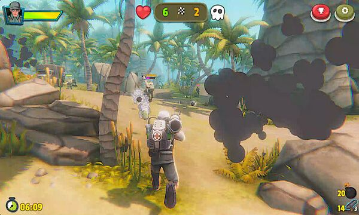
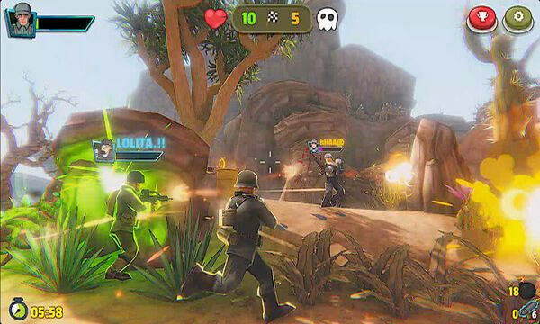
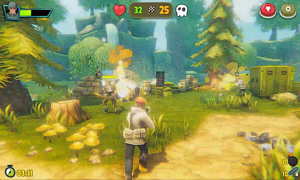

Elden Gunfire 1 Game – Overview – Free Download – PC – Compressed – Specs – Screenshots
Type of game: Action
Elden Gunfire 1 (162 MB) is an Action video game. Developed and published by Amonga99. It was released on January 23, 2024 for Windows. Elden Gunfire is a comic, funny and cute online multiplayer third person shooter game for everyone with cute cartoon 3D next generation graphics and captivating gameplay. Choose your unique character and weapons from many different characters and weapons of different classes and styles (Assault, SMG, Sniper, Shotgun, Knife, Pistol, Grenades, LMG, Heavy Machine Guns, Grenade Launcher, Laser Pistol , Water Gun, Electric Gun, Lava Gun, Flame Thrower.
-
OS: Windows 7 (SP1+) and Windows 10
-
Processor: Dual-Core 2.2 GHz or better
-
Graphics Card: Intel HD Graphics 5100 / AMD Radeon 77XX / NVIDIA GeForce GTX 660 or better
-
DirectX: Version 10
-
RAM: 4 GB



How to Dowenload game
Elden Gunfire 1 Download

Game Size: 162 MB